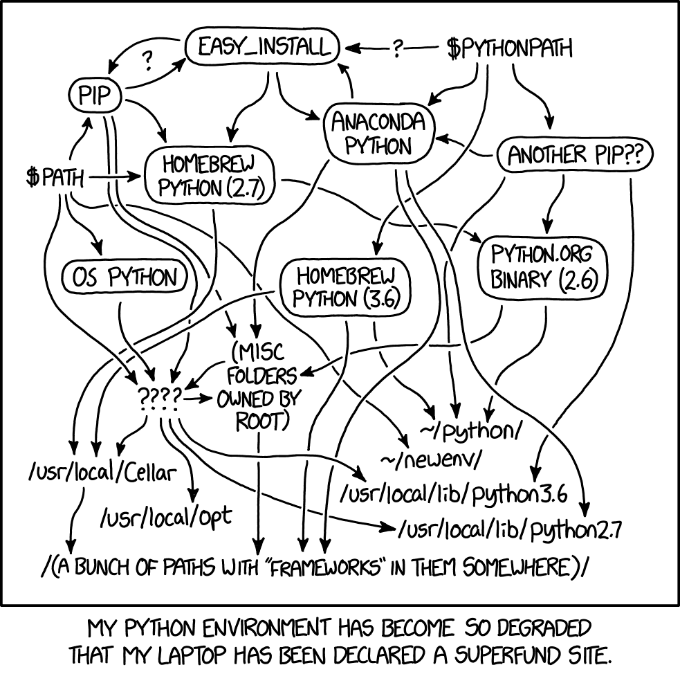

Crear entorno de desarrollo con pyenv y poetry
Posted on dom 16 enero 2022 in Tutorial Python • 4 min read

¿Qué es Pyenv?
Es una herramienta para instalar y manejar multiples versiones de Python. Permite a los desarrolladores ganar acceso rápido a nuevas versiones de Python y mantener su sistema limpio y libre de paquetes innecesarios.
Actualización e instalación de dependencias.
En ubuntu lo primero que se tiene que tener es el sistema actualizado para poder instalar las dependencias necesarias para pyenv:
sudo apt update -y
Instalación de dependencias:
apt install -y make build-essential libssl-dev zlib1g-dev libbz2-dev libreadline-dev libsqlite3-dev wget curl llvm libncurses5-dev libncursesw5-dev xz-utils tk-dev libffi-dev liblzma-dev python-openssl git
Clonar el repositorio de pyenv
Para tener la última versión de pyenv se clona el repositorio git de pyenv:
git clone https://github.com/pyenv/pyenv.git ~/.pyenv
Configure el entorno
Se definen las siguientes variables:
- Si se usa bash:
echo 'export PYENV_ROOT="$HOME/.pyenv"' >> ~/.bashrc
echo 'export PATH="$PYENV_ROOT/bin:$PATH"' >> ~/.bashrc
echo -e 'if command -v pyenv 1>/dev/null 2>&1; then\n eval "$(pyenv init -)"\nfi' >> ~/.bashrc
- Si se usa zsh:
echo 'export PYENV_ROOT="$HOME/.pyenv"' >> ~/.zshrc
echo 'export PATH="$PYENV_ROOT/bin:$PATH"' >> ~/.zshrc
echo -e 'if command -v pyenv 1>/dev/null 2>&1; then\n eval "$(pyenv init -)"\nfi' >> ~/.zshrc
Activar pyenv
Para activar pyenv se reinicia el shell: 1. Reejecutar el shell:
exec "$SHELL"
- O hacer source:
Para bash:
source .bashrc
Para zsh:
source .zshrc
Verificar la instalación
Para verificar la instalación de pyenv se puede ver la versión que se tiene instalada:
❯ pyenv --version
pyenv 2.2.2-10-g943c5f99
Listar las versiones de Python instaladas
Para ver las versiones de Python que se puede instalar se ejecuta:
pyenv install --list
Esto devuelve la lista de versiones de Python:
Available versions:
2.1.3
2.2.3
2.3.7
2.4.0
2.5.0
2.6.0
2.7.0
3.0.1
3.1.0
3.2.0
3.3.0
3.4.0
3.5.0
3.6.0
3.7.0
3.8.0
3.9.0
3.10.0
3.11.0a3
activepython-2.7.14
anaconda3-2021.05
graalpython-21.3.0
ironpython-2.7.7
jython-2.7.2
mambaforge-4.10.3-10
micropython-1.17
miniconda3-4.7.12
miniforge3-4.10.3-10
pypy3.8-7.3.7
pyston-2.3.1
stackless-3.7.5
Nota: Se muestra un pequeño conjunto de toda la lista.
Para ver la versión de Python que se está usando:
❯ pyenv versions
system
* 3.9.9 (set by /home/ernesto/.python-version)
En mi equipo estoy usando la versión 3.9.9.
Para instalar una versión
En mi caso voy a cambiar a la versión 3.10
❯ pyenv install 3.10.0
Downloading Python-3.10.0.tar.xz...
-> https://www.python.org/ftp/python/3.10.0/Python-3.10.0.tar.xz
Installing Python-3.10.0...
patching file aclocal.m4
patching file configure
Hunk #5 succeeded at 10537 (offset -15 lines).
python-build: use readline from homebrew
python-build: use zlib from homebrew
Installed Python-3.10.0 to /home/ernesto/.pyenv/versions/3.10.0
Ahora se tiene incorporado la versión 3.10.0 pero no por defecto:
pyenv versions
system
3.10.0
* 3.9.9 (set by /home/ernesto/.python-version)
Usar una versión de Python:
pyenv local 3.10.0
Ahora se tiene la 3.10.0:
pyenv versions
system
* 3.10.0 (set by /home/ernesto/.python-version)
3.9.9
Al ejecutar Python se tiene esa versión:
❯ python
Python 3.10.0 (default, Dec 26 2021, 15:25:54) [GCC 11.2.0] on linux
Type "help", "copyright", "credits" or "license" for more information.
>>>
Se puede usar global en vez de local, lo que hace es que ahora la versión de python es para todo.
Ya con esto, se puede pasar a la instalación de poetry.
Poetry
Es una herramienta de manejo de instalación de dependencias como construcción y emmpaquetado de Python.
Instalación
Para Linux se ejecuta lo siguiente:
curl -sSL https://raw.githubusercontent.com/python-poetry/poetry/master/get-poetry.py | python -
Esto descarga el script get-poetry y lo ejecuta.
Para validar que está instalado poetry, revisamos la versión:
❯ poetry --version
Poetry version 1.1.12
Ya en este punto se puede usar poetry para crear un entorno virtual de manejo de dependencias de un proyecto.
Para habilitar la completación:
Para bash:
poetry completions bash > /etc/bash_completion.d/poetry.bash-completion
Para zsh:
poetry completions zsh > ~/.zfunc/_poetry
Para oh my zsh:
mkdir $ZSH_CUSTOM/plugins/poetry
poetry completions zsh > $ZSH_CUSTOM/plugins/poetry/_poetry
Usar poetry en un proyecto.
En este caso se usará el proyecto donde se genera el código de los contenidos de este blog.
En el directorio del proyecto, se ejecuta poetry init:
❯ poetry init
This command will guide you through creating your pyproject.toml config.
Package name [ecrespo.github.io]:
Version [0.1.0]:
Description []:
Author [Ernesto Crespo <ecrespo@gmail.com>, n to skip]:
License []:
Compatible Python versions [^3.9]: ^3.10.0
Would you like to define your main dependencies interactively? (yes/no) [yes] no
Would you like to define your development dependencies interactively? (yes/no) [yes] no
Generated file
[tool.poetry]
name = "ecrespo.github.io"
version = "0.1.0"
description = ""
authors = ["Ernesto Crespo <ecrespo@gmail.com>"]
[tool.poetry.dependencies]
python = "^3.10.0"
[tool.poetry.dev-dependencies]
[build-system]
requires = ["poetry-core>=1.0.0"]
build-backend = "poetry.core.masonry.api"
Do you confirm generation? (yes/no) [yes] yes
Esto genera un archivo pyproject.toml con el siguiente contenido:
[tool.poetry]
name = "ecrespo.github.io"
version = "0.1.0"
description = ""
authors = ["Ernesto Crespo <ecrespo@gmail.com>"]
[tool.poetry.dependencies]
python = "^3.9.0"
[tool.poetry.dev-dependencies]
[build-system]
requires = ["poetry-core>=1.0.0"]
build-backend = "poetry.core.masonry.api"
Para activar el entorno se ejecuta poetry shell:
poetry shell
The virtual environment found in /home/ernesto/proyectos/ecrespo.github.io/.venv seems to be broken.
Recreating virtualenv ecrespo.github.io in /home/ernesto/proyectos/ecrespo.github.io/.venv
Spawning shell within /home/ernesto/proyectos/ecrespo.github.io/.venv
Para el caso de este proyecto, que es el blog, usa como motor de generador de contenido estático pelican. Para instalarlo se ejecuta:
❯ poetry add pelican
Using version ^4.7.1 for pelican
Updating dependencies
Resolving dependencies... (17.7s)
Writing lock file
Package operations: 14 installs, 0 updates, 0 removals
• Installing colorama (0.4.4)
• Installing commonmark (0.9.1)
• Installing markupsafe (2.0.1)
• Installing pygments (2.10.0)
• Installing pytz (2021.3)
• Installing six (1.16.0)
• Installing blinker (1.4)
• Installing docutils (0.18.1)
• Installing feedgenerator (2.0.0)
• Installing jinja2 (3.0.3)
• Installing python-dateutil (2.8.2)
• Installing rich (10.16.1)
• Installing unidecode (1.3.2)
• Installing pelican (4.7.1)
Esto hace que el archivo pyproject.toml incorpore el paquete:
[tool.poetry]
name = "ecrespo.github.io"
version = "0.1.0"
description = ""
authors = ["Ernesto Crespo <ecrespo@gmail.com>"]
[tool.poetry.dependencies]
python = "^3.9.0"
pelican = "^4.7.1"
[tool.poetry.dev-dependencies]
[build-system]
requires = ["poetry-core>=1.0.0"]
build-backend = "poetry.core.masonry.api"
Para salirse del entorno se ejecuta exit.
Con esto se tiene poetry funcionando.
Referencias:
Los enlaces que se usaron para hacer el artículo son los siguientes:
- Why you should use pyenv + Pipenv for your Python projects
- Howto install pyenv on Ubuntu 18.04
- Poetry
- Pyenv
- Python Virtual Environments Tutorial using Virtualenv and Poetry
¡Haz tu donativo! Si te gustó el artículo puedes realizar un donativo con Bitcoin (BTC) usando la billetera digital de tu preferencia a la siguiente dirección: 17MtNybhdkA9GV3UNS6BTwPcuhjXoPrSzV
O Escaneando el código QR desde la billetera: